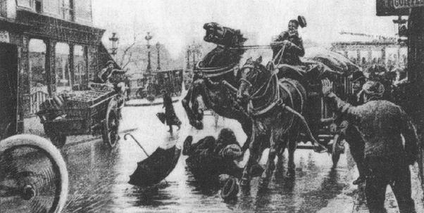

Ngày thứ năm hôm đó thời tiết thật chán. Trời cứ lúc lúc lại đổ mưa, tối sầm. Pi-e và Ma-ri, có muốn vùi đầu vào công việc để khỏi để ý đến những cơn mưa rào tháng Tư cũng chẳng được. Pi-e phải đi dự bữa tiệc của Hội các giáo sư trường Đại học Khoa học, sau đó đến nhà xuất bản Gô-chi-ê chữa bản thảo, rồi qua Viện hàn lâm. Ma-ri cũng cần đi nhiều nơi.
Buổi sáng bận rộn ấy, hai vợ chồng mới chợt thoáng thấy nhau thôi. Pi-e ở dưới nhà gọi với lên gác, hỏi Ma-ri có ra phòng thí nghiệm không? Ma-ri đang bận mặc áo cho I-ren và E-vơ, nói rằng có nhẽ không có thì giờ – câu trả lời đó lẫn vào tiếng động ồn ào. Cửa ngoài đóng sập, Pi-e vội đi ngay. Trong khi Ma-ri ăn trưa ở nhà với các con và cụ bác sĩ Qui-ri, thì ở khách sạn Các Hội khoa học phổ thông phố Đăng-tông, Pi-e chuyện trò vui vẻ với các đồng nghiệp. Ông thích những buổi họp êm ả như thế này, hết bàn đến Xoóc-bon lại nói về nghiên cứu về nghề nghiệp. Câu chuyện chung hướng về những tai nạn có thể xảy ra trong các phòng thí nghiệm, Pi-e lên tiếng ủng hộ ngay dự án nội qui nhằm hạn chế những nguy cơ đe dọa người nghiên cứu.
Lúc hai giờ rưỡi trưa, Pi-e đứng dậy tươi cười, từ biệt các bạn, xiết chặt tay Giăng Pe-ranh, hẹn gặp lại ngay chiều hôm ấy. Trên ngưỡng cửa, ông lơ đãng nhìn lên và hơi bĩu môi trước bầu trời u ám. Mở chiếc ô ra, Pi-e đi dưới mưa rào, xuôi về phía sông Xen.
Đến nhà in, thấy đóng cửa: Các xưởng đều đình công. Pi-e ngoặt ra phố Đô-phin, ầm ĩ tiếng quát tháo của anh em đánh xe ngựa, tiếng tàu điện ken két trên bến.
Trong cái phố eo hẹp của thành phố Pa-ri cổ này sao mà chen chúc như vậy! Lòng đường chỉ đủ cho xe ngựa tránh nhau; và đối với người qua lại rất đông trưa hôm ấy, vỉa hè quả là chật hẹp. Pi-e phải lần từng chỗ mà bước. Lúc thì theo vỉa hè, lúc thì xuống đường, bước thấp bước cao, dáng điệu một người đang suy nghĩ. Pi-e nghĩ gì mà đôi mắt đăm chiêu, nét mặt nghiêm nghị thế? Một thí nghiệm đang làm chăng? Hay công trình của anh bạn Uya-banh, mà bản báo cáo gửi viện Hàn lâm đang để trong túi áo ông? Hay là nghĩ đến Ma-ri?...
Pi-e bước trên đường nhựa đã được một lúc, theo sau một chiếc xe ngựa chở khách cửa đóng kín, đang từ từ lăn bánh về phía cầu Mới. Đến ngã tư phố này rẽ ra đường bờ sông, đường phố rất ồn ào. Một toa xe điện vừa chạy qua dọc bờ sông, tiến về quảng trường La Công-coóc. Một chiếc xe chở hàng chở nặng, thắng hai ngựa, từ trên cầu đổ xuống, cắt ngang đường xe điện và theo nước kiệu, tiến thẳng về phố Đô-phin.
Pi-e định đi qua đường sang hè bên kia. Với sự đột ngột của người lơ đễnh, Pi-e rời khỏi phía sau xe ngựa chở khách, mà cái mui vuông đang như một tấm bình phong, chắn tầm mắt ông không nhìn thấy gì ở phía trước, và đi vài bước sang bên trái. Bỗng, Pi-e đụng phải một con vật thở phì phò, bốc khói: đó là một trong hai con ngựa của xe chở hàng vừa đúng lúc sắp lướt qua chiếc xe ngựa chở khách. Khoảng cách giữa hai xe xít lại đến chóng cả mặt. Sửng sốt, Pi-e loạng choạng níu lấy ức con vật, nó chồm lên. Đế giày của nhà bác học trơn tuột trên mặt đường ướt. Một tiếng kêu thất thanh, từ hai mươi lồng ngực khiếp đảm. Pi-e sóng sượt dưới vó hai con ngựa lực lưỡng. Người qua đường thét lên: “Dừng xe lại! Dừng xe lại!”. Người đánh xe cố ghìm dây cương. Nhưng vô hiệu, cả ngựa lẫn xe cứ lao tới.
Pi-e nằm vật dưới đất, còn sống, không can gì. Ông không kêu, và cũng gần như không nhúc nhích. Thân hình ông lọt giữa chân ngựa, không hề bị lướt chạm, rồi lại lọt giữa hai bánh trước xe chở hàng. Một sự kỳ lạ vẫn có thể xảy ra. Nhưng cái khối to lớn sáu tấn kia, theo đà của nó, còn vượt thêm mấy thước nữa. Cái bánh sau bên trái đụng phải một chướng ngại vật yếu ớt, nó nghiến qua. Một cái trán, một cái đầu người. Sọ vỡ tung ra, một chất lầy nhầy đỏ lòm tung tóe khắp nơi, lẫn trong bùn. Bộ óc của Pi-e Qui-ri.

.Cảnh sát giao thông đến nhắc cái thân hình còn ấm, mà sự sống vừa bị cướp mất trong khoảnh khắc. Họ liên tiếp gọi các xe ngựa chở khách đến, nhưng không xe nào chịu chở một cái xác đầy bùn, máu me lênh láng. Nhiều phút trôi qua, người qua đường tò mò xúm lại xem, chen chúc. Một đám đông, ngày càng dày đặc vây quanh cái xe chở hàng đã dừng lại và những tiếng quát thét giận dữ đổ về phía anh đánh xe Lu-i Ma-nanh, đã vô tình gây ra án mạng. Sau cùng, có người mang đến một cái cáng. Người ta đặt nạn nhân lên đó, và sau một lúc cứu chữa vô ích, trong một hiệu thuốc, cáng được khiêng đến đồn cảnh sát để xem giấy tờ người chết.
Khi tin đồn ra rằng nạn nhân là Pi-e Qui-ri, một giáo sư, một nhà bác học nổi tiếng, thì sự hỗn độn càng tăng gấp bội, cảnh sát phải can thiệp để che chở Ma-nanh đang bị công chúng dọa đánh.
Một thầy thuốc, ông Đru-ê, lau bộ mặt vấy bùn của nạn nhân, xem kỹ vết thương rộng toác ở đầu, đếm được mười sáu mảnh xương, mà chỉ cách đây hai mươi phút còn là một cái sọ. Người ta gọi điện thoại báo cho trường Đại học Khoa học biết. Rồi thì, trong trạm cảnh sát ở phố Gơ-răng O-guýt-xtanh, viên chánh cẩm và người thư ký xúc động nhìn hai bóng dáng cúi gằm và nức nở khóc: Cơ-léc, phụ tá phòng thí nghiệm và Ma-nanh, anh đánh xe ngựa mắt đỏ húp.
Giữa hai người đó, Pi-e nằm dài, trán quấn băng, để hở khuôn mặt còn nguyên vẹn – thờ ơ với tất cả.
Cái xe chở hàng, dài năm thước, chất đầy ắp những kiện áo quần nhà binh, đỗ ở trước cửa.
Mưa rơi xóa dần những vết máu lấm chấm ở một bánh xe. Hai con ngựa non hơi bồn chồn vì vắng chủ, cứ thở phì phò và gõ móng xuống đất.
Tai ương ập đến nhà ông bà Qui-ri. Ô tô, xe ngựa chở khách chạy qua chạy lại, do dự, dọc theo những dãy thành lũy cổ và dừng trên đại lộ Kê-léc-man vắng vẻ. Một nhân viên phủ tổng thống bấm chuông, thấy trả lời rằng bà Qui-ri chưa về, lại quay đi, không trao thư. Lại một tiếng chuông kêu, khoa trưởng Pôn A-pen và giáo sư Giăng Pe-ranh bước vào.
Trong nhà chỉ có cụ bác sĩ Qui-ri và chị giúp việc.
Bước ra đón khách, cụ thấy vẻ mặt bối rối của hai người. Pôn A-pen có nhiệm vụ báo cho Ma-ri biết trước tiên, nên cứ đứng đó, im lặng ngại ngùng. Những phút do dự bi thảm ấy không kéo dài. Cụ già nhìn nét mặt họ một lần nữa, và không hỏi một lời, cụ nói:
– Con tôi chết rồi!
Nghe kể tai nạn, trên khuôn mặt khô đét và răn rúm, hai dòng lệ từ từ chảy. Những dòng lệ đau đớn và phẫn nộ. Với một lòng thương xót mãnh liệt và một sự tuyệt vọng cùng cực, cụ trách con trai không cẩn thận làm thiệt đời mình, cụ nhắc lại mãi một câu não ruột:
– Không biết nó còn mơ màng cái gì!
Sáu giờ, tiếng chìa khóa vặn trong ổ. Ma-ri, vui vẻ, lanh lẹ, hiện ra trên ngưỡng cửa phòng khách. Bà thoáng thấy dấu hiệu khủng khiếp của lòng đoái thương trong thái độ quá ư trân trọng của các bạn mình. Một lần nữa, Pôn A-pen kể lại chuyện xảy ra. Ma-ri đứng im, sững sờ, dường như không hiểu gì cả. Bà không ngã vào những cánh tay âu yếm, không than vãn, khóc lóc. Người ta cảm thấy bà cũng vô tri, vô giác, trơ trơ như một tượng gỗ. Một hồi lâu, im lặng, ngơ ngác, môi bà mới lắp bắp và khẽ hỏi, như còn điên cuồng hy vọng một sự cải chính nào đó:
– Pierre chết rồi?... Chết... Chết thật à?...
Từ khi tiếng “Piere đã chết” thấm vào tâm hồn Marie thì cuộc sống cô quạnh và thầm lặng như một tấm áo choàng đã vĩnh viễn đặt trên đôi vai người quả phụ. Ma-ri Qui-ri, trong cái ngày tháng Tư ấy, đã trở thành cô đơn, buồn thảm khôn nguôi.
Một bức tường vô hình giờ đây như ngăn cách Ma-ri với những người chứng kiến tấn thảm kịch này. Trước những lời thương tiếc và an ủi của họ hàng thân thuộc, Ma-ri vẫn trơ trơ: Mắt ráo hoảnh, mặt xanh xám, như không nghe thấy gì, và khó khăn lắm mới đáp lại những câu hỏi cấp bách nhất. Bằng vài lời vắn tắt, Ma-ri không cho mổ xác khám nghiệm để kết thúc điều tra của tòa án và yêu cầu cho đưa thi hài về đại lộ Kê-léc-man.
Bà nói với bà bạn Pe-ranh cho I-ren sang ở nhờ trong những ngày tới, đánh điện về Vác-xô-vi “Pi-e chết vì tai nạn”. Rồi ra ngoài vườn đất còn ẩm ướt, ngồi xuống, chống khủy tay lên đầu gối, hai tay ôm lấy đầu, hai mắt đờ ra.
Không một cử động, như câm, như điếc, Ma-ri ngồi chờ người bạn đời của mình.
Thoạt tiên, người ta mang đến mấy vật kỷ niệm đau thương tìm thấy trong các túi của Pi-e: Một bút máy, mấy chiếc chìa khóa, một ví, một cái đồng hồ – máy không hề suy xuyển,cả đến mặt kính cũng còn nguyên. Sau cùng lúc tám giờ tối, một xe cấp cứu đến đỗ trước nhà. Ma-ri vội bước lên và trong ánh sáng mập mờ, nhìn thấy khuôn mặt của Pi-e bình thản, khoan thai.
Chiếc cáng nặng nề, chậm chạp, đi qua cổng nhỏ. Ăng-đrê Đờ-biếc-nơ đến tìm người thầy, người bạn của mình ở đồn cảnh sát, lúc đó cũng đỡ chiếc cáng bi thảm. Thi hài được đặt ở một buồng nhà dưới và Ma-ri ngồi một mình với chồng.
Bà hôn mặt chồng, trên cơ thể hãy còn mềm, gần như còn ấm, hôn lên bàn tay, hãy còn gập lại được. Người ta phải dìu Ma-ri sang phòng bên cạnh, để bà khỏi trông thấy cảnh khâm liệm. Như mất hồn, bà nghe lời rồi chợt nghĩ là giây phút đó sẽ mất đi không bao giờ lấy lại được, và đáng ra không thể cho ai thu xếp những quần áo vấy máu ấy, thế là bà trở lại, và bám lấy người chết.
Hôm sau, Giắc Qui-ri là anh ruột Pi-e tới. Đứng trước hai anh em, một người còn, một người mất, Ma-ri không kiềm chế nổi nữa, òa lên khóc nức nở. Rồi như trấn tĩnh lại, bà đi thờ thẫn trong nhà, hỏi xem đã tắm và chải đầu cho E-vơ như mọi ngày chưa. Bà ra vườn, gọi I-ren đang xếp ô chơi ở nhà Pe-ranh, và nói qua hàng rào với I-ren rằng: “Bố vừa mới bị đau đầu lắm, bố cần được yên tĩnh”. Ngây thơ, em bé trở lại với đồ chơi của nó. Sau đó mấy tuần lễ, Ma-ri không thể nhắc nhở nỗi đau thương của mình trước mọi người, như bị chìm đắm vào im lặng...
Cụ bác sĩ Qui-ri, Giắc, Dô-dếp và Brô-ni-a lo lắng theo dõi từng cử chỉ của Ma-ri, giờ đây trong áo tang đen, đã biến thành một con người lạnh giá, trầm lặng, không hồn. Ngay những lúc trông thấy hai con, Ma-ri cũng chẳng có một cảm nghĩ gì. Lúc nào cũng như mất trí, tuy không chết theo được người đã khuất nhưng bà hầu như đã từ giã cõi đời này.
Những họ hàng, bầu bạn ân cần chăm sóc, lo lắng đến tương lai mà Ma-ri hầu như chẳng còn đoái hoài gì nữa. Cái chết của Pi-e Qui-ri đặt ra nhiều vấn đề quan trọng và cấp bách. Những công trình nghiên cứu mà Pi-e bỏ dở từ nay sẽ ra sao, và cả đến việc giảng dạy ở Xoóc-bon nữa? Ma-ri sẽ ra sao?
Trong gia đình ai nấy thì thầm bàn bạc, lắng nghe những gợi ý của đại biểu Bộ giáo dục và của trường Đại học, cứ liên tiếp đến đại lộ Kê-léc-man. Ngay sau hôm tang lễ, chính phủ Pháp muốn tặng một trợ cấp Quốc gia cho quả phụ và hai con của Pi-e Qui-ri. Giắc đến cho em dâu biết. Ma-ri đã từ chối dứt khoát.
– Không cần phải trợ cấp. Tôi còn trẻ, có thể kiếm sống cho tôi và các con tôi.
Trong giọng rắn nói rỏi, đã hét vang lòng quả cảm vốn có của bà.
Giữa nhà nước Pháp và gia đình Qui-ri còn phân vân, do dự. Trường đại học sẵn sàng giữ Ma-ri trong ngạch. Nhưng với cương vị nào? Và phòng thí nghiệm thì sao? Liệu có thể đặt người đàn bà thiên tài ấy dưới mệnh lệnh của một ai khác? Tìm đâu ra một giáo đủ thẩm quyền để điều khiển phòng thí nghiệm của Pi-e Qui-ri?
Khi được hỏi về nguyện vọng, bà Qui-ri trả lời rằng lúc này chưa suy nghĩ được, không biết nên thế nào...
Giắc, Brô-ni-a và người bạn trung thành nhất của Pi-e là Gioóc Guy cảm thấy họ cần phải quyết định và đề xuất ra vấn đề thay cho Ma-ri.
Giắc Qui-ri và Gioóc Guy đến trình bày niềm tin quả quyết của mình với hiệu trưởng trường Đại học: Ma-ri là nhà vật lý duy nhất của nước Pháp có thể tiếp tục công việc mà Pi-e và bà đã làm. Ma-ri là giáo sư duy nhất xứng đáng kế tiếp Pi-e. Ma-ri là trưởng phòng thí nghiệm duy nhất có thể thay Pi-e. Phải gạt bỏ mọi truyền thống và tục lệ để bổ nhiệm Ma-ri làm giáo sư Xoóc-bon.
Do sự khẩn khoản của hai giáo sư Mác-xơ-lanh Béc-tơ-lô, Pôn A-pen và hiệu trưởng trường Đại học Li-a, chính phủ Pháp đã có một cử chỉ trung thực và rộng rãi. Ngày 13 tháng 5 năm 1906, Hội đồng các trường Đại học khoa học nhất trí quyết định duy trì khóa giảng đã được thành lập cho Pi-e Qui-ri, và trao công việc này cho Ma-ri với cương vị là “giảng viên”.
Đây là quyết nghị của trường Đại học Khoa học:
“Trường Đại học Pháp.
Bà Qui-ri, tiến sĩ khoa học, trưởng phòng thí nghiệm ở trường Đại học Khoa học ở Đại học đường Pa-ri, được giao trách nhiệm dạy một giáo trình Vật lý ở trường ấy.
Lương hàng năm của bà Qui-ri là một vạn quan, kể từ mồng một thángNăm1906”.
Lần đầu tiên, một phụ nữ được bổ nhiệm trong ngành Đại học Pháp.
Ma-ri lơ đãng nghe cụ bố chồng kể tỉ mỉ về sứ mệnh nặng nề mà mình phải đảm nhận. Bà chỉ nói:
– Con sẽ thử.
Và chợt nhớ lại lời của Pi-e, nay đã thành một di chúc, một mệnh lệnh chỉ rõ cho mình con đường phải đi “dù sao đi nữa, dầu chỉ còn cái xác không hồn, cũng cứ phải làm việc”.
Giắc Qui-ri và Dô-dếp Xkhua-đốp-xki đã rời khỏi Pa-ri. Chẳng bao lâu nữa, Brô-ni-a cũng sẽ về Ba Lan để cùng với chồng trông nom an dưỡng đường của họ ở Da-cô-pan.
Một buổi tối, một trong những tối cuối cùng mà hai chị em còn ở gần nhau, Ma-ri kéo Brô-ni-a vào phòng ngủ của mình. Đang mùa hè nóng nực, nhưng trong lò sưởi củi cháy đỏ rực. Ma-ri khóa cửa lại, Brô-ni-a ái ngại nhìn em gái, khuôn mặt lúc này còn xanh xao, nhợt nhạt hơn mọi ngày. Ma-ri lẳng lặng lôi ở tủ ra một gói to bọc bằng giấy không thấm nước, dầy cộm. Rồi ra hiệu cho chị ngồi xuống bên cạnh mình.
Trên lò sưởi có để sẵn một cái kéo to.
– Chị Brô-ni-a ơi, chị phải giúp em trong việc này – Ma-ri chậm chạp tháo dây và trải giấy ra, dưới ánh lửa, hai bàn tay run rẩy và đỏ rực lên. Một bọc hiện ra, gói cẩn thận trong một tấm chăn trải giường. Ma-ri do dự một lúc rồi mở hẳn miếng vải trắng ra. Brô-ni-a phải cố nén mới không kêu vì khủng khiếp: đó là một bộ quần áo vấy bẩn đã khô và máu đã đen đọng. Bao nhiêu ngày rồi Ma-ri vẫn giữ bên cạnh mình những quần áo Pi-e mặc khi bị chiếc xe chở hàng cán chết ở phố Đô-phin.
Người đàn bà góa, cầm lấy cái kéo, bắt đầu cắt vụn cái áo vét tông màu sẫm, vất từng mảnh nhỏ vào lửa, nhìn chúng xèo xèo bốc khói, cháy dần rồi biến đi. Nhưng Ma-ri bỗng dừng lại không kìm nỗi dòng nước mắt làm ướt nhòa đôi mắt đã mệt mỏi. Một chất nhầy và ướt hiện ra, trong các nếp vải đã dính bết mấy mảnh cuối cùng của khối óc mới vài tuần lễ trước đây còn sản sinh ra bao ý nghĩ cao thượng, bao sáng kiến diệu kỳ.
Ma-ri nhìn trân trân những di tích đã rữa nát ấy, mân mê chúng một cách tuyệt vọng. Brô-ni-a phải giằng lấy kéo và áo quần, tiếp tục cắt, ném những miếng vải vào lửa.
Cả hai chị em, không ai nói một lời. Cái giấy gói, tấm khăn trải giường, chiếc khăn dùng để lau tay, cũng làm mồi cho lửa. Lúc này, Ma-ri mới nói:
– Em không thể đang tâm để những bàn tay hờ hững sờ mó vào những thứ này. – rồi sán lại gần Brô-ni-a – Chị ơi, em sống làm sao được bây giờ? Em cảm thấy là cứ phải sống, nhưng làm thế nào? Làm thế nào mới được chứ?
Ma-ri cứ níu lấy chị, nước mắt giàn giụa, khóc nức nở. Còn Brô-ni-a thì vừa đỡ lấy em vừa tìm lời khuyên giải, cuối cùng phải cởi áo, đặt lên giường đứa em gái đáng thương, lả đi vì quá xúc động.
Ngày hôm sau, Ma-ri lại như con người máy, vô tri đã thay bà đi đứng và làm việc kể từ ngày 19 tháng Tư. Và cũng chính là một con người máy mà Brô-ni-a ôm hôn từ biệt, đứng lặng trên sân ga, trong tấm voan đen tang tóc còn ám ảnh Brô-ni-a mãi sau này.
Một “cuộc sống bình thường” trở lại còn tràn ngập bao kỷ niệm thắm thiết của Pi-e. Có những chiều, nghe tiếng cửa mở, Ma-ri thoáng có ý nghĩ điên cuồng trong khoảnh khắc, rằng Pi-e Qui-ri sắp hiện ra trước mặt mình và tai nạn vừa qua chỉ là một cơn ác mộng.
Chung quanh Ma-ri, già hay trẻ, đều tỏ ra trông mong. Ai nấy chờ đợi ở Ma-ri những dự định, một kế hoạch về tương lai. Người quả phụ ba mươi tám tuổi ấy, mệt mỏi rã rời vì đau khổ, giờ đây phải gánh vác cả một gia đình.
Bà quyết định ở lại Pa-ri trong mùa hè để làm việc ở phòng thí nghiệm và để chuẩn bị cho việc giảng dạy sẽ khai mạc vào tháng Mười Một. Làm sao cho xứng đáng với bài giảng của Pi-e Qui-ri! Ma-ri thu thập các sách vở của mình, sưu tầm những tài liệu do nhà bác học để lại. Một lần nữa, bà lao vào học tập nghiên cứu.
Những ngày hè buồn thảm ấy, hai con gái về ở thôn quê; E-vơ đến chỗ ông nội ở Xanh Rê-mi trên sông Xen; I-ren ra bãi biển với bác Hê-la, chị thứ hai của Ma-ri, sang Pháp để giúp đỡ em.
Thu đến, Ma-ri tìm một chỗ ở mới, vì không thể ở mãi đại lộ Kê-léc-man. Bà muốn chuyển về Xô, nơi xưa kia Pi-e từng sống khi hai người gặp nhau – và giờ đây là nơi Pi-e an nghỉ.
Khi bàn đến vấn đề này, cụ bác sĩ Qui-ri, có lẽ lần đầu tiên trong đời, ngượng ngùng lại gần con dâu:
– Ma-ri con, nay Pi-e đã khuất, con chẳng có lý do gì mà sống với một lão già. Cha sẵn sàng đi nơi khác ở một mình, hoặc về với Giắc. Ý con thế nào?
– Cha mà đi thì làm cho con buồn. Nhưng xin tùy cha!
Giọng Ma-ri nghẹn ngào vì lo âu. Chẳng lẽ lại mất nốt người bạn trung thực này ư? Rất có thể cụ bác sĩ Qui-ri sẽ đến ở với Giắc, chứ không sống với con dâu nước ngoài người Ba Lan, mà việc đó cũng hợp tình, hợp lý...
Nhưng, có ngay câu trả lời mong mỏi:
– Cha thích sống với con, Ma-ri, mãi mãi...
Cụ còn muốn nói thêm: “Vì con cũng ưng như thế...”, nhưng quá xúc động, cụ không nói ra lời. Cụ vội quay đi, bước nhanh ra vườn với bé I-ren, đang mừng rỡ gọi ông nội.
Một bà góa, một cụ bảy mươi chín tuổi, hai đứa trẻ, mà một mới chập chững đi, đó là gia đình Qui-ri bây giờ.
“Bà Qui-ri, quả phụ của nhà bác học nổi danh mà ai cũng biết cái chết thảm khốc, được bổ nhiệm thay chồng là giáo sư Pi-e Qui-ri ở trường đại học Xoóc-bon, sẽ giảng bài đầu tiên vào ngày thứ hai mồng năm tháng một 1906, hồi một giờ rưỡi trưa.
Bà Qui-ri, trong buổi dạy mở đầu này, sẽ nói về thuyết i-ông trong các khí và sự phóng xạ.
Buổi khai giảng sẽ làm ở một “giảng đường lên lớp”. Những giảng đường này chỉ có độ một trăm hai mươi chỗ, dành cho sinh viên. Công chúng và nhà báo cũng được đến nghe, nhưng chỉ còn độ hai mươi chỗ... Trong trường hiện nay, trường hợp duy nhất của lịch sử trường Xoóc-bon liệu có thể vi phạm nội quy và để bà Qui-ri được sử dụng giảng đường lớn trong buổi giảng đầu tiên của bà?”
Mấy đoạn trích ở các tờ báo đương thời phản ánh sự quan tâm và náo nức của công chúng Pa-ri chờ đón buổi ra mắt đầu tiên của người quả phụ nổi danh. Phóng viên nhà báo, giới quý phái thượng lưu, phụ nữ đẹp, những nghệ sĩ đổ xô đến phòng giáo vụ của trường Đại học Khoa học phàn nàn vì không được “giấy mời”. Phải chăng chỉ có lòng đoái thương hoặc sự khao khát học hỏi? Họ thiết gì cái thuyết “những i-ông trong không khí”? Và nỗi đau khổ của Ma-ri trong cái ngày tàn ác này, chỉ như thêm gia vị cho sự tò mò của họ. Ngay sự đau thương cũng có những kẻ hiếu kỳ!
Lần đầu tiên, một phụ nữ sẽ giảng ở Xoóc-bon, một phụ nữ đồng thời lại là một thiên tài và một người vợ tuyệt vọng. Đối với lớp công chúng của những “buổi diễn giảng đầu tiên”, đó chính là điều hấp dẫn nhất.
Trưa hôm ấy, trong khi Ma-ri còn đứng trước mộ, ở nghĩa địa tại Xô, nói thầm với người mà hôm nay mình kế tiếp công việc, công chúng đã ngồi chật giảng đường nhỏ, ngồi kín các hành lang của trường Đại học, và tràn ra cả quảng trường Xoóc-bon. Trong phòng, người ít học ngồi lẫn với nhà thông thái, bạn bè thân thiết của Ma-ri bên những người xa lạ. Các sinh viên đến để nghe giảng, để chép cứ phải bám chặt vào ghế để khỏi bị chen bật ra.
Một giờ hai mươi nhăm phút. Tiếng nói chuyện mỗi lúc một ồn ào. Người ta xì xào, người ta hỏi nhau, người ta nghểnh cổ để được nhìn thấy bà Qui-ri vào. Ai nấy đều một ý nghĩ. Vị giáo sư mới này, người đàn bà duy nhất mà trường Xoóc-bon nhận vào hàng ngũ giảng dạy, sẽ mở đầu bằng những lời gì đây? Phải chăng là sẽ cảm ơn ông Bộ trưởng, cảm ơn trường Đại học? Phải chăng sẽ nói đến Pi-e Qui-ri? Chắc chắn là như vậy rồi: theo lệ thường, phải biểu dương người mà mình thay thế, nhưng đây lại là chồng, là người bạn cùng làm việc với mình. “Tình thế” thật oái oăm đấy! Một giây phút hồi hộp chưa từng có...
Một giờ rưỡi. Cửa trong cùng mở ra, Ma-ri Qui-ri bước lên bục giữa một tràng pháo tay vang dội. Bà cúi đầu. Một cử chỉ khô khan định để chào cử tọa. Bà đứng yên, hai tay nắm chặt lấy thành cái bàn dài xếp đầy dụng cụ thí nghiệm, đợi cho tiếng hoan hô chấm dứt. Giảng đường bỗng im bặt. Trước người đàn bà tái nhợt ấy, đang cố trấn tĩnh, một niềm xúc động lạ thường làm cho cử tọa, lúc đầu đến đây cốt để xem, phải lặng thinh. Nhìn thẳng đằng trước mặt, Ma-ri nói:
– Khi đề cập đến những bước tiến đã đạt được trong lĩnh vực Vật lý từ mười năm trở về đây, người ta phải ngạc nhiên trước những biến chuyển đã diễn ra trong nhận thức của chúng ta về điện và vật chất...
Đúng cái câu mà Piere Curie viết dở!
Những lời lạnh lùng “Khi đề cập đến những bước tiến đã đạt được trong lĩnh vực Vật lý...” chứa đựng một cái gì đau lòng đến như thế mà nhiều người nghe phải ứa nước mắt?
Cùng một giọng, hầu như đều đều, nhà bác học giảng hết bài học ngày hôm đó. Bà trình bày những thuyết mới về cấu trúc của điện, về sự phân rã hạt nhân, về các chất phóng xạ. Xong bài giảng khô khan ấy, Ma-ri lại rút lui qua cái cửa nhỏ cũng như lúc vào.